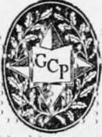

The Book Of Camp-Lore And Woodcraft | by Dan Beard
Boyhood is a wonderful and invaluable asset to the nation, for in the breast of every boy there is a divine spark, materialists call it the "urge of youth," others call it the "Christ in man," the Quakers call it the "inner light," but all view it with interest and anxiety, the ignorant with fear and the wise with understanding sympathy, but also with a feeling akin to awe. This lamentable state of affairs caused the writer so much real pain and concern that he then and there inaugurated a personal crusade for the benefit of the boys, a crusade with the avowed object of winning for them the peoples' interest in the big outdoors.
| Title | The Book Of Camp-Lore And Woodcraft |
| Author | Dan Beard |
| Publisher | Garden City Publishing Co. |
| Year | 1920 |
| Copyright | 1920, Beatrice Alice Beard |
| Amazon | The Book of Camp-Lore and Woodcraft |
By Dan Beard, Founder Of The First Boy Scouts Society
Garden City Publishing Co., Inc. Garden City New York
To George Du Pont Pratt, Commissioner Of Conservation, State Of New York Scout, Sportsman And Outdoor Man
 Foreword To The Second Edition
Foreword To The Second Edition- Boys, if this foreword is too highbrow for your taste, skip it, but the author don't believe you will, and even if he has used some dictionary words he feels that you will forgive him after he tells...
- Foreword
- Hidden In a drawer in the antique highboy, back of the moose head in my studio, there are specimens of Indian bead work, bits of buckskin, necklaces made of the teeth of animals, a stone calumet, my o...
- Chapter I. Fire Making By Friction
- How To Make A Fire-Board, Bow, Drill And Thimble Indian Legend Of The Source Of Fire Record Fire-Makers Rubbing-Stick Outfit Eskimo Thimble Bow, Bow-String, Thimble, Fire-Board, Fire-Pan Tinder, Ch...
- "Rubbing-Stick" Outfit
- Ever since the writer was a small boy he has read about making fire by rubbing two chips or two sticks together, and he was under the impression then, and is under the impression now, that no one ...
- The Fire-Board
- The fire-board (Figs. 5 and 5A) should be made of spruce, cedar, balsam, tamarack, cottonwood root, basswood, and even dry white pine, maple and, probably, buckeye wood. It should not be made of black...
- How To Char A Rag
- Find a flat stone (Fig. 10), a broad piece of board, a smooth, hard, bare piece of earth; set your cloth afire and after it begins to blaze briskly, smother it out quickly by using a folded piece of p...
- How To Make A Fire With A Drill And Bow
- First find a level solid foundation on which to place your fire-board, then make a half turn with the string of the bow around the spindle, as in the diagram (Fig.16); now grasp the thimble with the l...
- Making Fire Without A Bow
- My pupils in the Woodcraft Camp built fires successfully by using the rung of a chair for the spindle, a piece of packing case for a fire-board, and another piece for the socket wood and the string fr...
- Co-LI-LI—The Fire Saw
- After a dozen strokes, says our authority, Mr. Albert Ernest Jenks, the sides of the groove and the edge of the piece are burned down; presently a smell of smoke is plain and before three dozen str...
- Fire Pumping of the Iroquois
- Fig. 23 shows another form of drill. For this one it is necessary to have a weight wheel attached to the lower part of the spindle. A hole is made through its center and the drill fitted to this. The ...
- The Twirling Stick (American Indian)
- Fig. 7 is practically the same as Figs. 16 and 17, with this difference: the bow and thong are dispensed with and the spindle twirled between the palm of the hands, as formerly practised by the Califo...
- The Plow Stick (American Indian)
- The simplest method of friction is that of the plow, which requires only a fire-board with a gutter in it and a rubbing-stick to push up and down the gutter (Fig. 24). Captain Belmore Browne of Mt. Mc...
- The Pyropneumatic Apparatus
- Before or about the time of the American Revolution some gentleman invented a fire piston (Fig. 26) with which he ignited punk made of fungus by the heat engendered by the sudden compression of the ai...
- Chapter II. Fire Making By Percussion
- The preceding methods of producing fire by friction are not the white man's methods, and are not the methods used by our pioneer ancestors. The only case the writer can remember in which the pioneer w...
- How To Use Flint And Steel To Make Fire
- In the age of flint and steel, the guns were all fired by this method. Fig. 33 shows the gun-lock of an old musket; the hammer holds a piece of flint, a small piece of buckskin is folded around the in...
- The Chucknuck
- But the neatest thing in the way of flint and steel which has come to the writer's attention is shown by Fig. 31. This is a small German silver box which still contains some of the original fungus use...
- Punk Boxes
- The cowhorn punk box is made by sawing off the small end and then the point of a cow's horn (Fig. 30). A small hole is next bored through the solid small end of the horn to connect with the natural op...
- Sulphur Headed Spunks And Matches
- These old sulphur spunks were nothing more than kindling wood or tinder, because they would not ignite by rubbing but were lighted by putting the sulphur end in the flame. According to our modern id...
- The Real Lucifer Match
- That is, the match which lights from friction, is the invention of Isaac Holden, M. P. According to the Pall Mall Gazette, Mr. Holden said, In the morning I used to get up at 4 o'clock in order to pu...
- How To Make A Chucknuck
- The slow match or punk rope to fit in the brass cylinder may be made of candle wick or coach wick purchased at the hardware store; such wick is about three-eighths of an inch in diameter. Scout Commis...
- A Substitute For Flint And Steel
- The Malays having neither flint nor steel ingeniously substitute for the flint a piece of broken chinaware, and for the steel a bamboo joint, and they produce a spark by striking the broken china agai...
- Chapter III. How To Build A Fire
- How To Lay And Light A Fire An Experience With Tenderfeet Modern Fear Of Doing Manual Labor Matches Fire-Makers And Babylonians The Palpitating Heart Of The Camp Gummy Fagots Of The Pine H...
- How To Build A Fire
- By thy camp-fire they shall know thee. A PARTY of twenty or thirty men once called at the author's studio and begged that he would go with them on a hike, stating that they intended to cook thei...
- Matches
- It may be well to call the reader's attention to the fact that it takes very little moisture to spoil the scratch patch on a box of safety matches and prevent the match itself from igniting. The so-ca...
- Gummy Fagots Of The Pine
- In the mountains of Pennsylvania the old backwoodsmen, of which there are very few left, invariably build their fires with dry pine, or pitch pine sticks. With their axe they split a pine log (Fig....
- Split Wood
- Burns much better than wood in its natural form, and that logs from twelve to fourteen inches are best for splitting for fuel (Fig. 42); also one must not forget that in starting a fire the smaller th...
- Fire-Dogs
- For an ordinary, unimportant fire the turkey-lay (Fig. 54) is handy, but for camp-fires and cooking fires we use andirons on which to rest the wood, but of course in the forests we do not call them ...
- How To Open A Knife
- It is safe to say that when the old-timers were boys themselves, there was not a lad among them who could not whittle with considerable skill and many a twelve year old boy was an adept at the art. I ...
- How To Whittle
- The age of whittling began with the invention of the pocket knife and reached its climax about 1840 or '50, dying out some time after the Civil War, probably about 1870. All the old whittlers of the w...
- How To Split With A Jack-Knife
- Fig. 40 shows the proper way to use the knife in splitting a stick, so that it will not strain the spring at the back of the handle of the knife, and at the same time it will help you guide the knife ...
- Bonfires And Council Fires
- Are usually much larger than camp-fires, and may be made by heaping the wood up in conical form (Fig. 50) with the kindling all ready for the torch in the center of the pile, or the wood may be piled ...
- Camp Meeting Torch
- Because it was from a somewhat similar device at a camp meeting in Florida, that the author got the suggestion for his torch fire. The platform is made of anything handy and is covered with a thick ...
- Character In Fire
- The natives of Australia take dry logs, 6 ft. or more in length, and laying them down 3 ft. or 4 ft. apart, set them on fire in several places. Letting shorter logs meet them from the outside, and pla...
- How To Build A Fire On The Snow
- If it is practical it is naturally better to shovel away the snow, but personally I have never done this except in case of newly fallen snow. Old snow which is more or less frozen to the ground may be...
- How To Make A Fire In The Rain
- Spread a piece of bark on the ground to serve as a hearth on which to start your fire. Seek dry wood by splitting the log and taking the pieces from the center of the wood, keep the wood under cover o...
- Chapter IV. How To Lay A Good Cooking Fire
- A Personal Experience On Short Rations The Most Primitive Of Cooking Outfits Camp Pot-Hooks, The Gallow-Crook, The Pot-Claw, The Hake, The Gib, The Speygelia And The Saster Telegraph Wire Cookin...
- How To Lay A Good Cooking Fire
- No matter where the old camper may be, no matter how long a time may have elapsed since last he slept in the open, no matter how high or low a social or official position he may now occupy, it takes b...
- The Most Primitive Of Cooking Outfits
- Consisting of two upright forked sticks and a waugan-stick to lay across from fork to fork over the fire. Or maybe a speygelia-stick thrust slantingly into the ground in front of the fire, or perhaps ...
- Camp Pot-Hooks
- Are of various forms and designs, but they are not the S shaped things formerly so familiar in the big open fireplaces of the old homesteads, neither are they the hated S shaped marks with which the b...
- The Gallow-Crook
- Is not, as the name might imply, a human crook too intimately associated with the gallows, but on the contrary it is a rustic and useful bit of forked stick (Figs. 60, 61, 62 and 63) made of a sapling...
- The Pot-Claw
- Will be best understood by inspecting the diagrams (Figs. 64, 65 and 66), which show its evolution or gradual growth. By these diagrams you will see the stick is so cut that the fork may be hooked ove...
- The Hake
- Is easier to make than the pot-claw. It is a forked stick like the pot-claw, but in place of the notch near the lower end a nail is driven diagonally into the stick and the kettle hung on the nail (Fi...
- The Gib
- Is possibly a corruption of gibbet, but it is a much more humane implement. It requires a little more time and a little more skill to make a gib (Fig. 69) than it does to fashion the preceding pot-hoo...
- The Speygelia
- Is not an Italian, but is a long name for a short implement. The speygelia is a forked stick or a notched stick (Figs. 71, 72 and 73), which is either propped up on a forked stick (Fig. 71) and the lo...
- Telegraph Wire Cooking Implements
- Many campers are fond of making for themselves cooking utensils improvised from ordinary telegraph wire. In the old time open fireplaces of our grandsires' kitchen there were trammels consisting of ch...
- The Gridiron
- Campers have been known to be so fastidious as to demand a broiler to go with their kit; at the same time there was enough of the real camper in them to cause them to avoid carrying unwieldy broilers ...
- Skeleton Camp Stove
- Ingeniously devised by a Boy Pioneer. Two pieces of telegraph wire are bent into a triangular form (Figs. 84 and 85), and the ends of the triangle at A are left open or unjoined, so that they may read...
- Camp Cooking Fire
- The more carefully the fire is planned and built the more easily will the cooking be accomplished. The first thing to be considered in laying one of these fires is the Fire-Dogs Which in camp ar...
- Belmoe Lay
- Figs. 96 and 97. The first sketch shows the plan and the second the perspective view of the fire. The stove is made by two side logs or fire-dogs over which the fire is built and after it has fallen i...
- A Frying Fire
- Is built between two logs, two rows of stones, or sods (Figs. 98, 99 and 100); between these logs the fire is usually built, using the sides as fire-dogs, or the sticks may be placed in the turkey-lay...
- The Aures
- Is a rustic crane made exactly of the same form as are the cranes of the old-fashioned open fire-places, but ingeniously fashioned from a carefully selected green stick with two forks (Fig. 102). The ...
- Chapter V. Camp Kitchens
- Camp Pit-Fires, Bean Holes Cow-Boy Fire-Hole Chinook Cooking Fire-Hole Barbecue-Pits The Gold Digger's Oven The Ferguson Camp Stove The Adobe Oven The Altar Campfire Place Camp...
- Camp Kitchens
- Real camp kitchens are naught but well arranged fireplaces with rustic cranes and pot-hooks as already described, but in deforested countries, or on the plains and prairies, pit-fires are much in vogu...
- The Chinook Fire-Pit
- The chinook fire-pit is one which is used in the northwestern part of the United States, and seems to be a combination of the ordinary camp fire-dogs with cross logs and the cowboy fire-pit. Fig. 109 ...
- The Barbecue-Pit
- Is used at those feasts (Fig. 114), where they broil or roast a whole sheep, deer or pig. At a late meet of the Camp-fire Club of America they thus barbecued a pig. The fire-pit is about four feet ...
- The Gold Digger
- Is another bank pit, and one that I have seen used in Montana by Japanese railroad hands. It is made by digging a hole in the bank and using shelves either made of stones or old pieces of iron. Fig. 1...
- The Adobe
- Is one that the soldiers in Civil War days taught the author to build. The boys in blue generally used an old barrel with the two heads knocked out (Fig. 12l). This they either set in the bank or cove...
- The Altar Fire-Place
- Is built of logs (Fig. 132), of stones, of sod, or of logs filled with sods or stone (Fig. 131), and topped with clay (Figs. 130 and 132). The clay top being wider at one end than the other, on the pl...
- Primitive Cooking Utensils
- Therefore, start by spearing the meat on a green twig of sweet birch, or some similar wood, and toast it before the fire or pinch the meat between the split ends of a twig (Fig. 133) or better still ...
- How To Dress Small Animals
- Dressing in this case really means undressing, taking their coats off and removing their insides. In order to prepare for broiling or baking any of the small fur-bearing animals, make yourself a skinn...
- How To Barbecue A Deer, Or Sheep
- First dress the carcass and then stretch it on a framework of black birch sticks, for this sweet wood imparts no disagreeable odor or taste to the meat. Next build a big fire at each end of the pit...
- How To Make Dough
- Roll the top of your flour bag back (Fig. 136), then build a cone of flour in the middle of the bag and make a crater in the top of the flour mountain. In the crater dump a heaping teaspoon—or, to ...
- Mud Cooking
- In preparing a small and tender fish, where possible, the point under the head, where the gills meet, is cut, fingers thrust in and the entrails drawn through this opening; the fish is then washed, cl...
- How To Plank A Fish
- Cut off the head of the fish and clean by splitting it through the back, in place of the usual way of splitting up the belly. To salt red meat before you cook it is to make it dry and tough, but the f...
- Heating Water
- Water may be boiled in a birch bark vessel made by folding up a more or less square piece of bark, bending in the corner (Fig. 157) folds and holding them in place by thorns or slivers (Fig. 156). Or ...
- Chapter VI. Camp Food
- How To Make Ash Cake, Pone, Corn Dodgers, Flapjacks, Johnny-Cake, Biscuits And Doughgod Making Dutch Ovens Venison Banquets In The Open How To Cook Beaver Tail, Porcupines And Muskrats Camp Stew...
- How To Dry Corn
- The pioneer farmers in America and many of their descendants up to the present time, dry their Indian corn by the methods the early Americans learned from the Indians. The corn drying season naturally...
- Sweet Corn
- There is a way to preserve corn which a few white people still practice just as they learned it from the Indians. First they dig long, shallow trenches in the ground, fill them with dried roots and sm...
- Parched Field Corn
- When I was a little shaver in old Kentucky, the children were very fond of the Southern field corn parched in a frying pan (Fig. 161), and then buttered and salted while it was still hot; we parched f...
- Ash Cakes
- This ancient American food dates back to the fable times which existed before history, when the sun came out of a hole in the eastern sky, climbed up overhead and then dove through a hole in the weste...
- How To Make Johnny-Cake
- Is mixed in the same way as the pone or ash cake, but it is not cooked the same, nor is it the same shape; it is more in the form of a very thick pancake. Pat the Johnny-cake into the form of a disk a...
- Camp Biscuit
- Take two cups full of flour and one level teaspoonful and one heaping teaspoonful of baking powder and half a teaspoonful of salt, and mix them together thoroughly while dry. To this you add milk and ...
- The Vreeland Bannock
- Fred tells me that he makes this the same as he would biscuits and bakes it in a frying pan. The frying pan is heated and greased before the dough is dropped into it, making a cake about a half inch t...
- Flapjacks
- A fellow who cannot throw a flapjack is sadly lacking in the skill one expects to find in a real woodcrafter. A heavy, greasy flapjack is an abomination, but the real article is a joy to make and a jo...
- Doughgod
- First fry some bacon or boil it until it is soft, then chop up the bacon into small pieces quite fine, like hash. Save the grease and set the bacon to one side; now take a pint of flour and half a tea...
- Dutch Oven May Be Improvised
- From any combination of two metal dishes so made or selected that the large one will fit over the top and snugly overlap the smaller dish, so as not to admit dirt, dust or ashes to the food inside. In...
- The Sourdough's Joy
- Slice bacon as thin as possible and place a layer over the bottom and around the sides of the Dutch oven like a piecrust. Slice venison, moose meat or bear steak, or plain beef, medium thin and put in...
- How To Cook Venison
- If you want to know how real wild meat tastes, drop a sleek buck with a shot just over the shoulder—no good sportsman will shoot a doe—dress the deer and let it hang for several days; that is, if you ...
- Perdix Au Choux
- Is a great dish in Canada; the bird is cooked this way: Chop cabbage fine and highly spice it, then stuff the bird with the cabbage and nicely cover the partridge or grouse with many thin slices of ba...
- Lumberman's Baked Beans
- Wash the beans first, then half fill a pail with them, put them over the fire and parboil them until their skins are ready to come off; they are now ready for the pot. But before putting them in there...
- The Etiquette Of The Woods
- Requires that when a porcupine has been killed it be immediately thrown into the fire, there to remain until all the quills have been singed off of the aggressive hide, after which it may be skinned w...
- Porcupine Wilderness Method
- After it has been parboiled, suspend the porcupine by its forelegs in front of a good roasting fire, or over a bed of hot coals, and if well seasoned it will be as good meat as can be found in the wil...
- How To Cook Tail Of The Beaver
- Is considered a special delicacy. Many of the old wilderness men hang the flat trowel-like tails of the beaver for a day or two in the chimney of their shack to allow the oily matter to exude from it,...
- How To Cook Muskrat
- Is valuable also for his flesh. Its name and rat-like appearance have created a prejudice against it as a food, but thousands of persons eat it without compunction. For those to whom the name is a stu...
- How To Cook The Burgoo
- Of all the camp stews and hunters' stews of various names and flavors, the Kentucky burgoo heads the list; not only is it distinguished for its intrinsic qualities, its food value and delicious flavor...
- The Brunswick Stew
- Take two large squirrels, one quart of tomatoes, peeled and sliced, if fresh; one pint of lima beans or butter beans, two teaspoonfuls of white sugar, one minced onion, six potatoes, six ears of corn...
- Chapter VII. Packing Horses
- How To Make A Pack Horse Of Your Own How To Make An Aparejo How To Make A Cincha How To Make Latigo How To Throw A Diamond Hitch How To Throw A Squaw Hitch How To Hitch A Horse In Op...
- Packing Horses
- If one is going on a real camping excursion where one will need pack horses, one should, by all means, familiarize oneself with the proper method of packing a pack horse. This can be done in one's own...
- Make Your Own Aparejo
- Make your own aparejo of anything you can find. The real ones are made of leather, but at the present time, 1920, leather is very expensive. We can, however, no doubt secure some builders' paper, tar ...
- Even Boys Can Throw The Hitch
- Back in 1879, Captain A. B. Wood, United States Army, introduced a knowledge of the proper use of the pack saddle and the mysteries of the diamond hitch into the United States Army. The Fourth Cavalry...
- The Squaw Hitches
- These are useful when one has no one to help in packing the animal, and when one has no pack saddle like Fig. 200. With this squaw hitch you must throw your burden across the back of the horse, over t...
- Hitch The Horse
- On some trail where there are no trees,sticks, or even stones; but if he is a good woodcrafter and plainsman, with his hunt-ing knife he will proceed to dig as narrow and deep a hole as possible in th...
- How To Throw A Saddle Down
- General Miles once told the author that the handsomest man he had ever seen came dashing into their camp in a cloud of alkali dust; having ridden right through bands of hostile Indians which surrounde...
- How To Mount A Western Horse
- Years ago when the rider was in Montana on Howard Eaton's Ranch, near the celebrated ranch of Theodore Roosevelt, he had his first experience with Western horses, and being sensitive and standing in g...
- Chapter VIII. The Use Of Dogs. Man Packing
- Hiking Dogs, Pack Dogs How To Pack A Dog How To Throw The Dog Hitch How To Make Dog Travois Dog As A Beast Of Burden In Europe And Arctic America Man Packing Pack Rats Don't Fight Your Pack Port...
- A Dog Travois
- Can also be used at times with advantage, as it was used by our red brothers of the wilderness. Fig. 217 shows a dog harnessed to a travois, made of two shaft poles; the harness consists of a padded c...
- Man Packing
- When you, my good reader, get the pack adjusted on your back and the tump line across your forehead (Fig. 226), remember that you are being initiated into the great fraternity of outdoor people. But n...
- Men Who Have Carried The Pack
- The whole north country is sprinkled with the bones of the men who fought their packs. Our own land is also sprinkled with men we call misfits and failures, but who are really men who have fought th...
- The Duffel Bag Is Useful
- The duffel bag is the ideal poke in which to pack one's belongings. It is waterproof, it makes a good pillow, a far better pillow than an axe and pair of boots on which I myself have rested my weary h...
- Chapter IX. Preparing For Camping Trip
- Porters Of The Portage Old-Time Indian Fighters And Wild Animals Modern Stampede For The Open How To Get Ready For Camp Cut Your Finger Nails Go To Your Dentist Get A Hair Cut A B...
- How To Get Ready For Camp
- There are some little personal things to which one should give one's attention before starting on a long trip. If it is going to be a real wild camping trip it is best to go to the barber shop and get...
- A Buckskin Man's Pocket
- When we speak of his pocket that includes all of his clothes, because on the inside of his coat, if he wears one, are stuck an array of safety pins (Fig. 234), but usually the pins are fastened onto h...
- Chapter X. Saddles
- How To Choose A Saddle Evolution Of The Mexican Saddle Birth Of The Bluff Fronted Saddle The Cowboy Age Sawbucks Or Pack Saddles Straight Leg And Bent Knee Names Of Parts Of Saddle Center Fir...
- Choose A Saddle That Fits
- Everyone knows the misery of an ill-fitting shoe, and no one in his right mind would think of taking a prolonged hike in shoes that pinched his feet, but everybody does not know that a saddle should f...
- The Vidalia Saddle-Tree
- Migrated slowly from California over the plains, and was the first one to show the bulged front, and to change the narrow bow of the cow saddle to the bluff bow of the saddle as used to-day. It is cla...
- With Western Horses
- One must use Western ways; remember the horses were educated in the West if you were not, but it is not necessary to use the cruel, old jaw-breaking Spanish bits with a ring on them. I have one, but i...
- Names Of Parts Of Saddle
- For instance (Fig. 272), T is the saddle-tree; a good saddle-tree is made of five stout pieces of cottonwood which are covered with rawhide; when the rawhide shrinks it draws the pieces together more ...
- Chapter XI. Choosing A Camp Site
- 'Ware Single Trees Or Small Groups Of Trees Safety In Woods Or Forest Keep Your Eyes Open For Good Camp Sites Cross Streams While Crossing Is Good Keep To Windward Of Mosquito Holes 'Wa...
- Choosing A Camp Site. Continued
- We know all this to be true history, because within a short walk of the author's log house there are overhanging ledges of bluestone, and underneath these ledges we, ourselves, have crouched and campe...
- Tent Pegs
- Are necessary for almost any kind of a tent; you can buy them at the outfitter's and lose them on the way to camp; they even have iron and steel tent pegs to help make camping expensive, and to scatte...
- How To Pitch And Ditch Single-Handed
- Spread out your tent all ready to erect, put your ridge pole and your two uprights in place, and then drive some tent stakes, using the flat of your axe with which to drive them, so that you will not ...
- Shears, Gins Or Tripods
- Are the names used for different forms of rustic supports for the tents. Fig. 312 shows the ordinary shears, Fig. 313 shows the tent supported by shears; you will also note that the guy ropes for the ...
- Chapter XII. Axe And Saw
- Our Greatest Axeman Importance Of The Axe What Kind Of Axe To Use How To Swing An Axe How To Remove A Broken Axe Handle How To Tighten The Handle In The Head Accidents The Brains Of An Axe Etiqu...
- Importance Of The Axe
- While lecturing at the Teachers' College, Columbia University, I was asked to give a demonstration of the use of the axe. It then and there suddenly occurred to me that if these grown men needed and a...
- The Kind Of Axe To Use
- When bound for a real camp, take along with you a real axe. Never take an axe which is too large and heavy for you to swing with comfort. It is also best to avoid an axe which is too light, as with su...
- A Word About Swinging The Axe
- Grasp the axe with the left hand, close to the end of the handle, even closer than is shown in the diagram (Fig. 326); with the right hand grasp the handle close to the head of the axe, then bring the...
- Etiquette Of The Axe
- 1. An axe to be respected must be sharp and no one who has any ambition to be a pioneer, a sportsman or a scout, should carry a dull axe, or an axe with the edge nicked like a saw blade. It may intere...
- How To Sharpen Your Axe
- On the trail we have no grindstones, and often have recourse to a file with which to sharpen our axe; sometimes we use a whetstone for the purpose. New axes are not always as sharp as one would wish; ...
- The Best Time To Cut Or Prune Trees
- Is when the sap is dormant, which I will explain for my younger readers is that time of year when the tree is not full of juice. The reason for this is that when the sap or juice is in the wood when c...
- How To "Fall" A Tree
- If the tree, in falling, must pass between two other trees where there is danger of its hanging, so cut your kerf that the tree in falling will strike the ground nearest the smallest of the trees, o...
- How To Trim Or Swamp
- After a tree is felled, the swampers take charge of it and cut away all the branches, leaving the clean log for the teamsters to snake. They do the swamping by striking the lower side of the branch ...
- How To Make The Gluts Or Wedges
- Farmers claim that the best wedges are made of apple-wood, or locust wood; never use green wedges if seasoned ones may be obtained, for one seasoned wedge is worth many green ones. In the north woods,...
- How To Harden Green Wood
- Many of the Southern Indians in the early history of America tipped their arrows with bits of cane; these green arrow points they hardened by slightly charring them with the hot ashes of the fire. Glu...
- How To Make A Chopping Block
- After you have cut the crotch and trimmed it down into the form of Fig. 339, you may find it convenient to flatten the thing on one side. This you do by hewing and scoring; that is, by cutting a serie...
- How To Split Kingling Wood
- When splitting wood for the fire or kindling, make the first blow as in Fig. 346, and the second blow in the same place, but a trifle slanting as in Fig. 347; the slanting blow wedges the wood apart a...
- Holders Or Saw Bucks For Logs
- Select two saplings about five inches in diameter at the butts, bore holes near the butts about six inches from the end for legs, make a couple of stout legs about the size of an old-fashioned drey pi...
- How To Split A Log
- The method used by all woodsmen in splitting a log is the same as used by quarrymen in splitting bluestone, with this difference: the quarryman hunts for a natural seam in the stone and drives the wed...
- A Sawpit
- In the olden times, the good old times, when people did things with their own hands, and thus acquired great skill with the use of their hands, boards were sawed out from the logs by placing the log o...
- Chapter XIII. Council Grounds And Fires
- Cherokee Indian Council Barbecue Camp Meeting Council Ground The Indian Palisaded Council Fire Indian Legends Of The Fire Stealing The Fire From The Sun-Maidens Of The East Stealing The Fire Fro...
- Council Grounds And Fires
- Now that we have learned about the serious part of camping, hiking and woodcraft, about fire-building, cooking and axe work, we will leave the long trail and the hard trail and dump our duffel bag in ...
- The Indian Origins
- We have searched the legends of the Red Man for suggestions, and from various sources have learned that the Indian had a general belief that at the north there is a yellow or black mountain, at the ea...
- The Council Fire
- There could be no more impractical plan for a place to speak than a circle with a big fire in the middle of it, and that is the plan of all the council grounds. The audience must be seated on the circ...
- How To Describe An Ellipse
- After you have decided upon the size of your council grounds, drive two stakes A and B (Figs. 363 and 365) firmly into the ground; then take a cord, clothesline, or some kind of twine (Fig. 362), and ...
- What Is An Ellipse?
- An ellipse might be called a flattened circle. If you take a tin can and press the two sides of the open end of it inwards, it will form an ellipse. The dictionary says that an ellipse is a conic whic...
- How To Divide The Council Fire Ground
- This infinity talk has suggested to us a good idea, so we must thank our highbrow dictionary while we lay our council ground out with the major axis (the longest diameter) extending due north and sout...
- Council Fire Ceremonies
- On entering the council grounds always enter from the east, salute Too-le-ze, the white wolf, then go across the Ghost Walk with the sun to the West Court, and salute Kor-le, the bear; about face and ...
- Torch Fires
- Erected at each of the four courts. These fire torches at the four courts, if kept replenished with dry wood, will light up the council grounds and give a most picturesque and wild appearance, and at ...
- Indian Invocation
- O Great Mystery, we beseech thee, That we may walk reverently Beneath Lah-pah our brothers, the trees. That we may step lightly On Kis-so our kinsmen, the grasses. That we may walk lovi...
- Chapter XIV. Ritual Of The Council Fire
- Program Of A Council Fire Invocation The Pledge And Creed Of All Americans Appeal Ritual Of The Council Fire The ceremonies of the Council Fire may be conducted with the accompaniment of page...
- Program Of A Council Fire
- The guests enter and take their seats, then the Herald enters dressed in the costume of a scout, a frontiersman, or a medicine man, according to the plan of the particular Council Fire. The Herald fac...
- Invocation
- The Leader, or head officer, steps forward and throwing both hands up in a gesture of appeal, in which he is imitated by the assembly, he repeats: Weave for us, O Great Mystery, etc. (as already gi...
- The Pledge And Creed Of All Americans
- I believe in the people of the United States, I believe in the United States form of government, I believe in the preamble of the Declaration of Independence, I believe that all men are created equal...